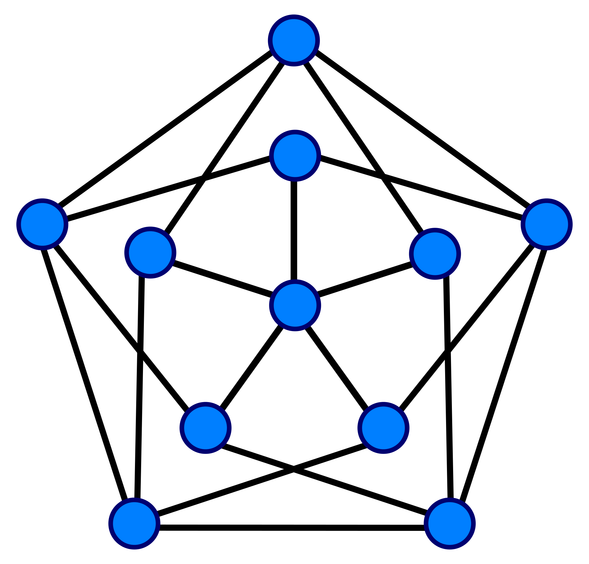

Functional programming

Functional programming is a programming paradigm in which programs are created by applying and composing functions. In functional programming, functions are treated as first-class objects, meaning that they can be bound to names, passed as arguments, and returned from other functions. Functional programming evolved from lambda calculus, a formal system of computation based only on functions. Some functional programming languages are: Haskell, Erlang and Elixir. Many other languages also implement functional programming paradigm, e.g. JavaScript, C++, Java.
Graph theory
Graph theory is the study of graphs, which are mathematical structures used to model pairwise relations between objects. A graph is a structure composed of vertices and edges that connect vertices. Graphs are one of the principal objects of study in discrete mathematics. They can be used to model many types of relations and processes in physical, biological, social and information systems. Many practical problems can be represented by graphs.